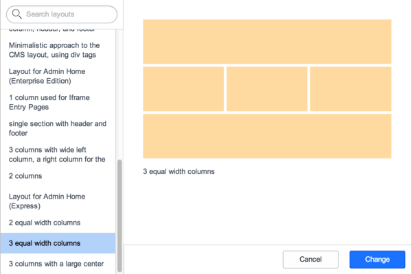

Defining a Layout
| |
Note: This article applies to Fuji. For more current information, see Homepage and Content Page Layouts at http://docs.servicenow.com
The ServiceNow Wiki is no longer being updated. Please refer to http://docs.servicenow.com for the latest product documentation. |
Contents
1 Overview
Layouts are UI elements that define how blocks of content can be added to a page. Layouts are used for homepages and content pages. Layouts provide the following functionality:
- Administrators can define custom layouts for homepages or content pages.
- Users who are allowed to modify their homepage can select a layout for the homepage.
- Users who are allowed to add content to their homepages can choose where in the layout to add the content.
Most successful websites use a fairly limited number of layouts to define the structure of a much larger number of pages. One might reasonably have several dozen pages, but only two or three layouts.
2 Layout Concepts
Layouts define the overall structure of the page by arranging where on the page dropzones appear. The dropzone is where content blocks (which make up the content of the page) can be added. Most content blocks match the width of the dropzone, so the dropzone controls both the location and sizing of the content block.
Defining a custom layout requires knowledge of Jelly script, but there are a number of predefined layouts that can be used in most cases. Once a layout is chosen, the layout dictates where the dropzones on a page will appear. Then content blocks can be added at any dropzone to create the actual content of the site.
2.1 Dropzones
Every layout divides the page into one or more logical areas. In the examples above, the dropzones are the areas labeled Header, One, or Two. The name 'Dropzone' comes from the fact that content blocks can be dropped into any one of these zones.
A number of commonly used predefined layouts are available, but you can also define your own custom layouts.
3 Custom Layouts
Users with the admin role can view the list of available layouts by navigating to Homepage Admin > Layouts. A homepage layout is just a UI macro whose name begins with "layout_".
- Layouts are XHTML that contains one or more dropzones.
- Dropzones are TDs (table data cells) within the HTML where pieces of content can be placed.
| |
Note: Knowledge of Jelly is required to understand the following example. |
For example, here is code for a layout:
<?xml version="1.0" encoding="utf-8"?>
<j:jelly trim="true" xmlns:j="jelly:core" xmlns:g="glide" xmlns:j2="null" xmlns:g2="null">
<table border="0" cellspacing="6" id="${jvar_name}" width="100%">
<tr>
<td colspan="2" id="dropzone0" dropzone="true"/>
</tr>
<tr>
<td id="dropzone1" dropzone="true" valign="top" width="50%"/>
<td id="dropzone2" dropzone="true" valign="top" width="50%"/>
</tr>
<tr>
<td colspan="2" id="dropzone999" dropzone="true" valign="top"/>
</tr>
</table>
</j:jelly>
3.1 Layout Rules
- A layout must contain at least one table.
- All dropzones must be TDs within a table.
- A dropzone has two key attributes:
- Its ID starts with "dropzone" (e.g., "dropzone2" or "dropzone3").
- It has an attribute of dropzone="true".
- Dropzone IDs must be unique (e.g., you can't have two dropzones named "dropzone1").
3.2 Optional layout features
- Nested tables are allowed, so it is possible to have a table within a TD within a table.
- There can be TDs that are not dropzones.
- Styles and formatting elements are acceptable.
- Fixed width TDs (as opposed to variable width) are allowed, although some content, like graphs, must have a significant minimum width.
- Fixed height TDs are allowed.
3.3 Layout Hints and Tips
- If cellspacing and cellpadding are set to zero, the drag-and-drop algorithm may have trouble distinguishing one cell from another, since multiple empty cells can potentially occupy the same point in space. It is still possible to place things via the layout control, and they will render properly. However, to use drag-and-drop to move things around, do not drop both cellspacing and padding to zero.
4 Choosing a Layout
The following information is users who have rights to modify their homepage. An ESS user, for example, cannot change the layout of a homepage.
- On the homepage, click the Switch to page field in the top right corner.
- Select Change Layout at the bottom of the choice list.
- The dialog box that appears contains a list of available layouts and a short description of each. Select a layout to see a simplified preview of the layout.
- 
- Select a layout and click Change to update the layout of the homepage.
{kind=link}
4.1 Layout Change Notes
- If the page already has content and the layout changes, the existing content stays in the same dropzones it started in. For example, content in dropzone2 of the old layout appears in dropzone2 of the new layout as well, although the dropzone may be in a significantly different location on the page.
- If the new layout has fewer or different dropzones than the old layout, there may be "orphan" content. For example, if there is content in dropzone5 of the old layout, and the new layout does not have a dropzone5, that content is now "orphaned". Any orphaned content is moved to dropzone1.
5 Adding Content
The Add content interface enables users to specify which dropzone to place content. For example, clicking the Add content link ( starting with the Fuji release) in the top left of the homepage displays a dialog box similar to this:
{kind=link}
{kind=link}
Select a piece of content to see a preview in the middle of the dialog box. The bottom of the dialog box displays a model of the current layout with an Add here link in each dropzone.
Click Add here in the dropzone where the content should be placed. The content is added and the dialog box remains open. The homepage changes in the background.
Users who can change content on a home page can search for gauges within a category when adding content to a homepage, and configure the appearance of gauges on homepages (starting with the Fuji release).